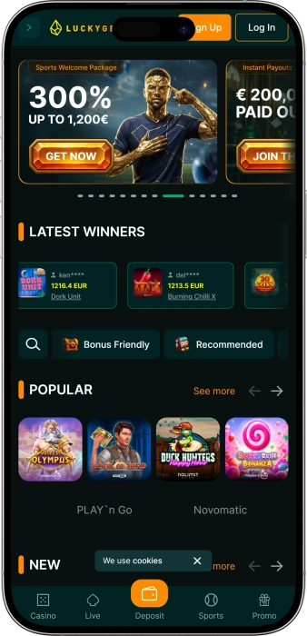
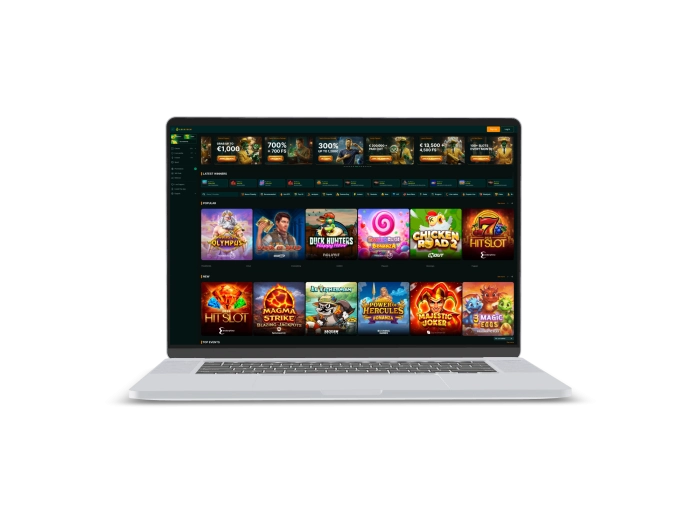

Exklusives Willkommensangebot von
Exklusives Willkommensangebot von
Luckygem Casino – Slots, Live-Casino, Sport und Boni
Top-Casinos
Bonusdetails
Casino
Boni
Rate
Freispiele
Mehr Infos
Erhalten
Vorteile
-
Tausende Spiele und Wetten
-
Live-Casino und Sport
-
Krypto- und E-Wallet-Zahlungen
-
VIP mit Rakeback
-
Regelmäßige Aktionen und Turniere
-
Missions, Store und Referral
-
Klare Navigation im Casino
- Bei Luckygem setzen wir auf Vielfalt: Neben Slots bieten wir Live-Casino, Instant Games und einen eigenen Sportbereich, sodass das Erlebnis deutlich breiter ist als in einem klassischen Casino. Dazu kommen laufende Promotions, ein VIP-System mit Rakeback sowie zusätzliche Bereiche wie Missions, Store, Tournaments und Referral. Die Plattform ist so aufgebaut, dass wir schnell zwischen Spielen, Bonusbereich, Live-Casino und Banking wechseln können.
Luckygem App



Über das Luckygem
Luckygem hebt sich dadurch ab, dass wir große Promotions mit einem aktiven VIP-System und gesonderten Angeboten für Casino- und Sportkunden kombinieren. Dazu kommt, dass wir nicht nur einen Einstiegsbonus zeigen, sondern ein ganzes Paket aus Reloads, Turnieren und zeitgebundenen Sonderaktionen anbieten.
- VIP-Rakeback bis 15%
- Highroller Bonus bis €1.500
- VIP-Boni bis €13.500 + 4.500 FS
Bei Luckygem verbinden wir mehrere Formate auf einer Plattform, sodass wir zwischen Slots, Live-Casino, Instant Games und Sportwetten wechseln können, ohne das Konto oder die Bedienlogik zu ändern. Unser Angebot richtet sich an Nutzer, die Vielfalt schätzen und nicht nur klassische Spielautomaten suchen. Die Basis bildet ein sehr breiter Spielekatalog, ergänzt durch Live-Tische, einen Instant-Bereich und einen eigenen Sportsbook-Teil. Innerhalb der Lobby arbeiten wir mit Kategorien wie Recommended, Hot RTP, Bonus Friendly, Jackpots, Feature Buy, New, VIP und Table, damit die Orientierung schneller gelingt. Zusätzlich gibt es einen klar gegliederten Live-Bereich mit Roulette, Blackjack, Baccarat, Dice-Spielen und Game Shows. Für ein schnelleres Spieltempo stehen Instant Games bereit. Wer lieber auf Sport setzt, findet Märkte für Fußball, Basketball, Esports und weitere populäre Wettbewerbe.

Der Unterhaltungsfaktor bei Luckygem geht über das reine Starten von Spielen hinaus. Wir integrieren Turniere, Gewinner-Übersichten, spezielle Events und Promotion-Mechaniken, die das Nutzungserlebnis abwechslungsreicher machen. Zu den wiederkehrenden Angeboten gehören Reload-Boni an bestimmten Wochentagen, Live-Boni, Highroller-Aktionen, Freispiele und gesonderte Sportangebote. Im Bonusbereich setzen wir nicht auf ein einzelnes Schema, sondern auf mehrere Promotion-Typen gleichzeitig: Welcome-Pakete, Cash Reloads, Freispiele, Freebets und Kombi-Booster für Wetten. Dadurch bleibt die Plattform sowohl für Casino-Spieler als auch für Sportnutzer interessant. Auch das Thema Loyalität ist bei uns breiter aufgebaut als in vielen klassischen Casinos. Neben dem VIP-Club sind Missions, Store und Referral Teil des Gesamtsystems. Aktivität wird dadurch nicht nur über Einzahlungen oder einzelne Spiele sichtbar, sondern auch über zusätzliche Engagement-Mechaniken. Im VIP-Bereich stehen Rakeback, Cashback, Level und exklusive Vorteile im Mittelpunkt. Der Store ergänzt dieses System, weil gesammelte Aktivität in Bonus-Elemente umgewandelt werden kann, während Turniere und Events die Plattform ständig in Bewegung halten. Dadurch wirkt Luckygem nicht wie eine reine Slot-Seite, sondern wie eine kombinierte Gaming-Umgebung mit Casino, Live-Bereich, Sport, Promotions und VIP-Struktur.
Luckygem: Ihr Komfort — Regeln, Sicherheit, Support
Luckygem – Besuchsregeln, Zugangsbedingungen und verantwortungsbewusstes Spielen
Der Zugang zu Luckygem ist ausschließlich für volljährige Nutzer vorgesehen, und auf den öffentlichen Seiten der Plattform wird die Grenze von 18+ direkt angegeben. Für die vollständige Nutzung des Kontos benötigen wir eine Registrierung mit grundlegenden persönlichen Angaben. Beim Spiel um Echtgeld können wir eine Identitätsprüfung und eine Bestätigung der Zahlungsdaten verlangen, insbesondere vor der ersten Auszahlung. Diese Prüfung dient dem Schutz des Kontos, der Zahlungsabläufe und der korrekten Abwicklung von Auszahlungen. Bei Luckygem ist es wichtig, eigene Zahlungsmittel zu verwenden und das Profil aktuell zu halten. Wenn Boni genutzt werden, gelten zusätzlich die Regeln der jeweiligen Aktion, ihre Laufzeit, zulässige Spiele und die Umsatzbedingungen. Für einen transparenten Zugang empfehlen wir, die Bereiche Terms of Use, Payment Policy, Privacy Policy und Bonus Policy vorab zu lesen.
Verboten sind alle Handlungen, die den fairen Charakter des Spiels oder des Zahlungsprozesses beeinträchtigen. Dazu zählen der Versuch, Regeln zu umgehen, Missbrauch von Boni, die Nutzung fremder Daten und Widersprüche bei der Verifizierung. Bei Auszahlungen kann eine zusätzliche Dokumentenprüfung sowie eine Prüfung der Zahlungsherkunft im Rahmen üblicher KYC/AML-Verfahren erfolgen. Für Luckygem wird außerdem beschrieben, dass Auszahlungen nach Möglichkeit über dieselbe Methode abgewickelt werden, die zuvor für Einzahlungen genutzt wurde. Das schafft mehr Transparenz im Finanzprozess und reduziert das Risiko strittiger Transaktionen.
Ein eigener Regelblock betrifft das verantwortungsbewusste Spielen. Auf den Hauptseiten von Luckygem wird Responsible Gaming ausdrücklich hervorgehoben, und wir verweisen darauf, dass sich Nutzer bei Bedarf an den Support wenden können. In öffentlichen Beschreibungen zu Luckygem wird die Selbstsperre über den Kundendienst abgewickelt und mit einer Dauer von 6 Monaten bis 5 Jahren dargestellt. Das ist ein wichtiges Instrument für alle, die eine längere Pause benötigen. Gleichzeitig wird bei Luckygem meist darauf hingewiesen, dass die Selbstsperre das zentrale Responsible-Gaming-Werkzeug ist und nicht ein besonders breites System interner Limits. Deshalb bleibt der bewusste Umgang mit Zeit, Budget und Spielfrequenz besonders wichtig.
Wichtige Zugangsbedingungen
- • Nur für volljährige Nutzer ab 18 Jahren
- • Registrierung mit aktuellen Profildaten
- • Mögliche KYC-Prüfung vor Auszahlungen
- • Nutzung eigener Zahlungsmittel
- • Einhaltung von Terms, Payment und Bonus Policy
Was bei uns untersagt ist
- • Bonusmissbrauch und Umgehung von Bedingungen
- • Nutzung fremder Daten oder Zahlungsquellen
- • Handlungen, die die Verifizierung erschweren
- • Eingriffe in die Fairness des Spielablaufs
- • Widersprüchliche Konto- oder Zahlungsangaben
Verantwortungsbewusstes Spielen bei Luckygem
- • Selbstsperre über den Kundendienst
- • Sperrzeiten können langfristig sein
- • Budget- und Zeitkontrolle bleiben zentral
- • Bei Kontrollverlust ist eine Pause sinnvoll
- • Der Support unterstützt bei Zugangsbeschränkungen
Luckygem – Lizenz, Datenschutz und Vertraulichkeit
Bei Luckygem ist der rechtliche Bereich in eigene Policy-Abschnitte aufgeteilt, was für Nutzer übersichtlich ist, weil die wichtigsten Regeln thematisch getrennt dargestellt werden. Auf den öffentlichen Seiten nennen wir Innovex Tech Holdings Ltd. als Betreiber, die Registrierungsnummer 15736, die Eintragung in Anjouan, Union of Comoros, sowie Novaflow Processing LTD. als Zahlungsabwickler. So werden der rechtliche Rahmen der Plattform und die Zahlungsabwicklung klar voneinander getrennt.
Der Lizenzaspekt bei Luckygem ist Teil der gesamten rechtlichen Infrastruktur der Plattform. Auf einzelnen Seiten wird der Markenauftritt als licensed casino beschrieben, gleichzeitig sind für Nutzer vor allem die veröffentlichten Bereiche Terms of Use, Privacy Policy, Payment Policy und Bonus Policy entscheidend. In diesen Dokumenten werden Registrierung, Kontonutzung, Bonusregeln, Zahlungsabläufe und die Verarbeitung personenbezogener Daten geregelt.
Der Datenschutz bei Luckygem verbindet rechtliche und technische Sicherheitsmaßnahmen. Schon der offizielle Titel der Privacy Policy verweist ausdrücklich auf Data Protection & Security. In unabhängigen Beschreibungen zu Luckygem wird in der Regel von SSL/TLS-Verschlüsselung gesprochen, die Login-Daten, persönliche Informationen und Zahlungsdaten bei der Übertragung schützt. Damit laufen sensible Daten über geschützte Verbindungen, wodurch das Risiko unbefugten Zugriffs reduziert wird.
Eine weitere Sicherheitsebene besteht aus Verifizierungs- und Anti-Fraud-Verfahren. Für Luckygem werden öffentlich KYC/AML-Prüfungen beschrieben, die vor der ersten Auszahlung oder bei erhöhtem Prüfbedarf greifen können. Dazu gehören typischerweise die Bestätigung der Identität, der Adresse und gegebenenfalls der Herkunft von Geldern. Dieses Modell ist für Plattformen mit Echtgeldtransaktionen üblich und dient der sicheren sowie regelkonformen Abwicklung.
Die Datenschutzerklärung ist bei Luckygem eng mit Konto, Auszahlungen und Support verbunden. Für Nutzer bedeutet das, dass Daten nicht nur zur Anmeldung, sondern auch zur Kontobestätigung, Transaktionsbearbeitung, Betrugsprävention und Erfüllung rechtlicher Pflichten genutzt werden. Ein Vorteil dieses Aufbaus liegt darin, dass Datenschutz und Zahlungsregeln in getrennten Dokumenten lesbar bleiben. Dadurch wird der rechtliche Teil transparenter und leichter verständlich.
In der Praxis entsteht bei Luckygem der Eindruck einer Plattform, deren Sicherheit auf mehreren Säulen basiert: veröffentlichte Policy-Bereiche, eine eigene Payment Policy, Identitätsprüfungen, geschützte Datenübertragung und eine klar strukturierte Rechtsdokumentation. Das ist nicht nur bei der Registrierung relevant, sondern auch bei Auszahlungen, Änderungen im Profil und Anfragen an den Kundendienst.
Luckygem – Ein- und Auszahlungen
Bei Luckygem unterstützen wir mehrere Zahlungsarten, damit Nutzer eine passende Methode für Einzahlungen und Auszahlungen wählen können. Auf den offiziellen Seiten nennen wir Kryptowährungen, Skrill, Neteller, Visa, MasterCard und Apple Pay. Dadurch ist die Plattform sowohl für klassische Kartennutzer als auch für E-Wallet- und Krypto-Spieler interessant. Einzahlungen werden bei Luckygem in der Regel sehr schnell verarbeitet und bei den meisten Methoden praktisch sofort gutgeschrieben.
Bei Auszahlungen zählt nicht nur die Geschwindigkeit des Zahlungswegs, sondern auch die interne Freigabe. In öffentlichen Beschreibungen zu Luckygem wird meist ein Prüfzeitraum von bis zu 48 Stunden genannt, bevor die eigentliche Auszahlung ausgelöst wird. Danach sind Kryptowährungen und E-Wallets in der Regel schneller als Kartenlösungen. Kartenauszahlungen und banknahe Wege können nach Freigabe zwischen 1 und 5 Werktagen benötigen. Deshalb sollte die gesamte Auszahlungsdauer immer als Kombination aus interner Prüfung und Zahlungsweg betrachtet werden.
Die Sicherheit von Zahlungen bei Luckygem beruht auf mehreren Ebenen. Erstens setzt die Plattform auf geschützte Datenübertragung und übliche Verifizierungsprozesse. Zweitens können bei der ersten Auszahlung oder bei erhöhter Prüfnotwendigkeit KYC-Dokumente verlangt werden. Drittens wird in öffentlichen Beschreibungen zu Luckygem erwähnt, dass Auszahlungen nach Möglichkeit über dieselbe Methode erfolgen, die zuvor für Einzahlungen verwendet wurde. Das senkt das Risiko strittiger Finanztransaktionen und macht die Zahlungsstrecke nachvollziehbarer.
Auch die Limits spielen für Nutzer eine wichtige Rolle. In öffentlichen Beschreibungen zu Luckygem wird am häufigsten ein Mindestbetrag für Auszahlungen von €40 genannt sowie Obergrenzen von bis zu €10.000 pro Tag und bis zu €50.000 pro Monat, wobei konkrete Werte je nach Zahlungsmethode, Kontostatus und Prüfung abweichen können. Für größere Beträge lohnt es sich daher, nicht nur auf die Geschwindigkeit, sondern auch auf die jeweilige Limitstruktur zu achten. Insgesamt wirkt das Banking bei Luckygem wie ein modernes Mischmodell aus schnellen Einzahlungen, mehreren Zahlungsarten und Sicherheitsprüfungen vor der finalen Freigabe.
| Method | Deposit speed | Payout after approval |
|---|---|---|
| Crypto | Instant | Up to 24 hours |
| Skrill | Instant | Up to 24 hours |
| Neteller | Instant | Up to 24 hours |
| Visa / MasterCard | Instant | 1–5 business days |
Luckygem Limits
- • Minimum withdrawal: from €40
- • Daily limit: up to €10,000
- • Monthly limit: up to €50,000
- • Exact values may vary by method, verification and account status
Luckygem – Kundensupport
Bei Luckygem ist der Support in einem eigenen Kontaktbereich organisiert und gehört zu den wichtigsten Service-Bausteinen der Plattform. Auf den öffentlichen Seiten nennen wir LiveChat, E-Mail und einen 24/7-Kundendienst. Das bedeutet, dass der Chat der wichtigste Kanal für schnelle Anliegen ist, während E-Mail besser für Verifizierung, Zahlungsfragen und Dokumente geeignet bleibt. Für die meisten Situationen ist LiveChat der direkteste Weg, weil er in die Plattform integriert und schnell erreichbar ist.
Das Support-Modell von Luckygem setzt eher auf Schnelligkeit als auf komplizierte Kontaktstrukturen. Wenn es um Boni, Kontozugriff, Einzahlungsprobleme oder den Status einer Auszahlung geht, ist der Chat in der Regel der erste sinnvolle Kontaktweg. E-Mail eignet sich besser für formale Fälle, in denen Unterlagen übermittelt oder Sachverhalte genauer erklärt werden müssen. In unabhängigen Beschreibungen zu Luckygem wird der Support ebenfalls regelmäßig als rund um die Uhr verfügbar dargestellt. In Nutzer- und Review-Beschreibungen wird außerdem häufig betont, dass die Antworten im Chat schnell erfolgen und der Ton freundlich sowie verständlich bleibt.
Ein Telefonkanal wird im öffentlichen Kontaktbereich von Luckygem dagegen nicht als Hauptweg hervorgehoben. In der praktischen Service-Struktur liegt der Fokus deshalb klar auf digitalen Kanälen wie Chat und E-Mail. Das ist typisch für moderne Online-Casinos und Sportplattformen, bei denen sich die meisten Anfragen um Konto, Zahlungen und Bonusbedingungen drehen. Der Vorteil liegt in einer schnelleren Weiterleitung an das passende Team und in einer unkomplizierten Bearbeitung.
Auch sprachlich wirkt Luckygem vergleichsweise flexibel. Die Plattform ist in mehreren Sprachversionen sichtbar, darunter Englisch, Deutsch, Französisch, Spanisch und Griechisch, was in der Regel auch den Service erleichtert. Selbst wenn nicht jede Sprache in derselben Tiefe im LiveChat betreut wird, vereinfacht die mehrsprachige Oberfläche Navigation und Kommunikation deutlich. Insgesamt erscheint der Support bei Luckygem modern, digital, rund um die Uhr erreichbar und auf praktische Anliegen ohne unnötige Bürokratie ausgerichtet.
Kontaktkanäle bei Luckygem
- • LiveChat als schnellster Hauptkanal
- • E-Mail für Dokumente und komplexere Anliegen
- • 24/7-Support als dauerhafte Verfügbarkeit
- • Kein deutlich hervorgehobener Telefonkanal im öffentlichen Kontaktbereich
Antwortzeit und Servicequalität
- • Chat reagiert in der Regel am schnellsten
- • E-Mail eignet sich für formale Fälle
- • Support ist stark auf Konto und Zahlungen ausgerichtet
- • Die Kommunikation bleibt klar und praxisnah
Sprachliche Verfügbarkeit
- • Mehrsprachige Plattformstruktur
- • Mehrere lokalisierte Oberflächen verfügbar
- • Erleichtert Basisanfragen und Navigation
- • Regeln und Bereiche sind leichter verständlich
Softwareanbieter
Unterhaltung und Gaming im Luckygem
Luckygem – Treueprogramm und VIP-Club
Das Treueprogramm von Luckygem gehört zu den auffälligsten Teilen der gesamten Plattform, weil es nicht nur mit einem klassischen VIP-Status arbeitet, sondern direkt an die tägliche Aktivität der Nutzer gekoppelt ist. Auf der offiziellen VIP-Seite wird klar hervorgehoben, dass Rakeback auf Einsätze unabhängig vom Ergebnis angerechnet wird und der maximale Rücklauf bis zu 15% erreicht. Damit wird sofort deutlich, wie das System gedacht ist: nicht als seltene Einmalprämie, sondern als langfristige Begleitung aktiver Casino- und Sportnutzer.
Öffentliche Beschreibungen zu Luckygem ergänzen dieses Bild und sprechen von 6 Rängen mit insgesamt 30 internen Levels. Das ist praktisch, weil der Fortschritt nicht wie ein großer Sprung wirkt, sondern wie ein klar aufgebauter Entwicklungsweg. Mit steigendem Status erhöhen sich in der Regel Cashback, Rakeback, Level-up-Belohnungen, persönliche Angebote und teilweise auch die Geschwindigkeit finanzieller Abläufe. Im Einstiegsbereich werden meist Cashback ab 3% und Rakeback ab 5% genannt, während auf den höchsten Stufen Cashback bis 20% und Rakeback bis 15% auftauchen. Dadurch bleibt der VIP-Club von Luckygem nicht nur für Highroller relevant, sondern auch für Nutzer mit regelmäßiger Aktivität.
Inhaltlich reduziert sich das VIP-System bei uns nicht auf eine einzige Rückvergütungszahl. Auf offiziellen Spielseiten von Luckygem erscheinen zusätzlich Hinweise auf VIP bonuses up to €13,500 + 4,500 FS, was die Größenordnung des oberen Segments zeigt. In unabhängigen Beschreibungen werden außerdem schnellere Auszahlungen, persönliche Manager, individuelle Angebote und Belohnungen beim Erreichen neuer Levels erwähnt. So entsteht bei Luckygem kein rein symbolischer VIP-Bereich, sondern ein echtes Bindungssystem für aktive Nutzer.
Der Zugang zum VIP-Bereich ist in der Praxis meist an die Kontoaktivität gekoppelt. Öffentliche Beschreibungen zu Luckygem verweisen vor allem auf ein Progressionsmodell: Je höher Aktivität, Einsatzvolumen und Beteiligung innerhalb der Plattform, desto schneller steigt der Status. Zusätzliche Vorteile ergeben sich durch Missions, Store und Punkte, die laut Beschreibungen über Einzahlungen, Turniere und Spielaktivität gesammelt werden können. Dadurch funktioniert das Treueprogramm bei Luckygem nicht isoliert, sondern als Teil der gesamten Plattformstruktur.
Wichtig ist außerdem, dass der VIP-Club bei Luckygem die laufenden Promotions nicht ersetzt, sondern ergänzt. Nutzer können gleichzeitig an Reload-Angeboten, Turnieren und Event-Promos teilnehmen und parallel ihren VIP-Rang ausbauen. Genau dadurch wirkt das Loyalty-Modell breit und alltagsnah. Luckygem baut hier eher einen fortlaufenden Entwicklungspfad als eine einzelne Cashback-Mechanik.
Voraussetzungen für Registrierung und Zugang
- • Aktives Luckygem-Konto
- • Regelmäßige Spielaktivität und Einsätze
- • Aufstieg über interne Levels
- • Automatische Bewertung der Aktivität möglich
- • Missions, Store und Turniere können zusätzlich relevant sein
Luckygem VIP-Stufen
- • Topaz Star – Einstiegsrang, meist mit Cashback ab 3% und Rakeback ab 5%
- • Jade Ace – nächster Schritt mit besseren Rückvergütungen und ersten Level-up-Belohnungen
- • Sapphire Master – stärkere Boni, mehr persönliche Angebote und spürbarer Statuszuwachs
- • Emerald Guru – fortgeschrittene Stufe mit erweiterten Belohnungen und mehr Priorität
- • Ruby Legend – hohes Segment mit großen VIP-Vorteilen und schnelleren Prozessen
- • Diamond Titan – Spitzenrang mit Cashback bis 20% und Rakeback bis 15%
Verfügbare VIP-Boni und Vorteile
- • Daily Rakeback – bis zu 15%
- • Daily Cashback – bis zu 20%
- • Level-up Rewards – fortlaufende Belohnungen beim Aufstieg
- • VIP Bonuses – bis zu €13.500
- • Freispiele innerhalb der VIP-Struktur – bis zu 4.500 FS
- • Persönliche Angebote – auf Aktivität abgestimmte Promotions
- • Schnellere Auszahlungen – Vorteil höherer Stufen
- • Persönlicher Manager – Vorteil der oberen Ränge
Luckygem – Boni, Sonderangebote, Turniere und Spielevents
Bei Luckygem ist das Bonussystem auch ohne VIP-Club bereits sehr breit aufgestellt, weil Welcome-Angebote, Reload-Aktionen, Live-Boni, Freispiele, Freebets für Sport und separate Event-Mechaniken parallel laufen. Auf der offiziellen Promotions-Seite ist klar erkennbar, dass wir nicht mit nur einem universellen Bonus arbeiten, sondern mit einem ganzen Netz unterschiedlicher Promotion-Typen. Das ist praktisch, weil ein Nutzer eher Slots bevorzugt, ein anderer Live-Spiele spielt und ein dritter vor allem auf den Sportbereich setzt. Für jedes dieser Felder bleibt ein eigener Angebotsstil sichtbar.
In der Welcome-Struktur von Luckygem erscheinen auf der öffentlichen Promotions-Seite vier Einstiegsboni: 1st Welcome Bonus – 150% bis €1.000 + 100 FS, 2nd Welcome Bonus – 100% bis €1.000 + 150 FS, 3rd Welcome Bonus – 200% bis €1.000 + 200 FS und 4th Welcome Bonus – 250% bis €1.000 + 250 FS. Schon daran wird deutlich, dass der Startbonus nicht nur auf die erste Einzahlung begrenzt ist, sondern über mehrere Stufen verläuft. Für den Live-Bereich wird zusätzlich ein Live Reload von 100% bis €500 gezeigt, während Highroller einen eigenen Highroller Bonus von 150% bis €1.500 finden. Genau diese Aufteilung nach Spielstil macht das Promotions-System von Luckygem flexibler.
Auch die wöchentlichen Aktionen sind bei Luckygem klar nach Tagen gegliedert. Auf der Promotions-Seite finden wir Monday Reload mit 50 Free Spins in Le King, Limited MidWeek Reload mit 50% bis €500, 25 FS Friday Reload mit 25 High-Value FS in SixSixSix und Friday Cash Reload mit 75% bis €1.000. Dadurch wiederholt sich nicht einfach derselbe Reload, sondern unterschiedliche Mechaniken wechseln sich ab: Freispiele, Cash-Bonus und thematische Slot-Aktionen. Zusätzlich fällt der Turbo Spins Bonus mit 50 FS à €1 pro Spin auf, was ihn bereits durch den Einzelwert der Freispiele hervorhebt.
Der Sportbereich von Luckygem verfügt ebenfalls über eigene Angebote. In der offiziellen Struktur stehen 1st Deposit Freebet – 100% bis €300, 2nd Deposit Freebet – 100% bis €300, 3rd Deposit Freebet – 100% bis €600 sowie Comboboost mit bis zu 100% Profit pro Wette, MidWeek Freebet bis €100 und Weekend Freebet bis €100. Das ist wichtig, weil Luckygem nicht nur als Casino auftritt, sondern als hybride Plattform mit eigenem Sportsbook. Promotions verteilen sich also sowohl auf Casino als auch auf Wetten.
Eine zusätzliche Unterhaltungsebene entsteht durch Events und Turniere. Auf der offiziellen Promotions-Seite erscheinen Take your cash, Drops&Wins, Spinoleague, Soccer Early Payouts, Love Battle, Mystery Heist, BGaming Drops Frenzy Fest mit 30.000 EUR und das Big Adventures Tournament. Solche Aktionen sorgen für saisonale Dynamik und Wettbewerb. Nutzer erhalten dadurch nicht nur einen Einzahlungsbonus, sondern auch Zugang zu Ranglisten-, Themen- oder Netzwerk-Events mit eigener Preislogik. Genau darin zeigt sich, dass Luckygem nicht nur mit statischen Boni arbeitet, sondern mit einem laufenden Event-Kalender.
Luckygem Welcome-Boni
- • 1. Bonus – 150% bis €1.000 + 100 FS
- • 2. Bonus – 100% bis €1.000 + 150 FS
- • 3. Bonus – 200% bis €1.000 + 200 FS
- • 4. Bonus – 250% bis €1.000 + 250 FS
- • Mehrstufiges Einstiegspaket statt nur eines einzelnen Startbonus
Wöchentliche und spezielle Casino-Aktionen
- • Supercharge Bonus – 100% bis €1.500
- • Highroller Bonus – 150% bis €1.500
- • Live Reload – 100% bis €500
- • Monday Reload – 50 FS in Le King
- • MidWeek Reload – 50% bis €500
- • Friday Reload – 25 FS in SixSixSix
- • Friday Cash Reload – 75% bis €1.000
- • Turbo Spins Bonus – 50 FS zu je €1
Sportboni bei Luckygem
- • 1st Deposit Freebet – 100% bis €300
- • 2nd Deposit Freebet – 100% bis €300
- • 3rd Deposit Freebet – 100% bis €600
- • Comboboost – bis zu 100% Profit pro Wette
- • MidWeek Freebet – bis zu €100
- • Weekend Freebet – bis zu €100
Events, Turniere und saisonale Aktionen
- • Drops&Wins – netzwerkbasierter Preisformat
- • Spinoleague – ranglistenorientiertes Wettbewerbsevent
- • Soccer Early Payouts – spezielle Mechanik für Sportwetten
- • BGaming Drops Frenzy Fest – Event mit Hinweis auf €30.000
- • Big Adventures Tournament – Turnierformat
- • Love Battle und Mystery Heist – thematische Spielevents
Luckygem – Welche Spiele und Wetten wir anbieten
Bei Luckygem bieten wir nicht nur eine einzelne Gaming-Vertikale, sondern mehrere Formate gleichzeitig an. Nutzer können ihre Aktivität zwischen Casino, Live-Bereich, Instant Games und Sportwetten aufteilen. Die Plattform basiert auf einem großen Casino-Katalog – auf den offiziellen Seiten erscheinen mehr als 5.000 Spiele, dazu kommen über 470 Live-Spiele und mehr als 200 Instant Games. Schon das zeigt, dass Luckygem kein kleines Automatencasino ist, sondern eine breite Mehrformat-Plattform.
Slots bilden den Kern unseres Angebots. Zur besseren Orientierung strukturieren wir sie über Bereiche wie Recommended, Hot RTP, Bonus Friendly, Jackpots, Feature Buy, New und VIP. Dadurch lassen sich populäre Titel, jackpotorientierte Spiele oder bonusgeeignete Slots schneller finden. Innerhalb des Slot-Angebots treten Anbieter wie Evolution, Pragmatic Play, BGaming, Play’n GO und Ezugi auf, wodurch eine große Vielfalt an Mechaniken, Themen und Spielstilen entsteht.
Das Live-Casino von Luckygem basiert auf klassischen Tischspielen und unterhaltungsstarken Show-Formaten. Auf den offiziellen Seiten werden im Live-Bereich Roulette, Blackjack, Baccarat, Dice und Game Shows hervorgehoben. Damit eignet sich das Live-Angebot sowohl für Nutzer, die klassische europäische Tische bevorzugen, als auch für jene, die dynamischere Formate mögen. Wichtig ist außerdem, dass Live-Spiele bei uns kein Randbereich sind, sondern ein eigenständiger großer Block.
Instant Games verleihen Luckygem ein schnelleres Spieltempo. Dieses Format richtet sich an Nutzer, die kurze Runden mit unmittelbarem Ergebnis bevorzugen. Zusätzlich finden sich auf der Plattform Table Games, Jackpot-Kategorien, ein Lottery-Bereich und weitere Spielsegmente. Dadurch deckt der Katalog von Luckygem sowohl klassische als auch moderne Spielformen ab.
Der Sportbereich macht Luckygem zu einer hybriden Plattform. In der offiziellen Beschreibung der Startseite sprechen wir ausdrücklich über ein Sportsbook mit wettbewerbsfähigen Quoten für Fußball, Basketball und Esports. Damit eignet sich Luckygem nicht nur für Slots und Live-Tische, sondern auch für Nutzer, die Casino und regelmäßige Sportwetten kombinieren möchten. Gerade diese Mischung gibt der Plattform ein breites, flexibles Profil.
Spielkategorien bei Luckygem
- • Slots – der Hauptkatalog mit tausenden Automatenspielen
- • Live Casino – Roulette, Blackjack, Baccarat, Dice und Game Shows
- • Instant Games – kurze Runden mit schnellem Ergebnis
- • Table Games – klassische Tischspielformate
- • Jackpots – Titel mit großen Gewinnmechaniken
- • Lottery / Others – zusätzliche Spielformate außerhalb klassischer Slots
- • Sportsbook – Wetten auf populäre Sport- und Esports-Events
Navigations- und Spiel-Filter
- • Recommended – empfohlene Spiele
- • Hot RTP – gesonderter Filter für RTP-orientierte Titel
- • Bonus Friendly – für bonusgeeignete Spiele
- • Feature Buy – Slots mit Bonuskauffunktion
- • New – neue Titel im Katalog
- • VIP – Premium-Bereich innerhalb der Plattform
Luckygem – Minimale und maximale Einsätze
Bei Luckygem werden keine einheitlichen Einsatzlimits für alle Spiele gleichzeitig veröffentlicht, weil die Spannen vom Provider, vom Spieltyp und vom konkreten Live-Tisch abhängen. Für Nutzer bedeutet das, dass Slots, Instant Games, Live-Roulette und Sportwetten mit unterschiedlichen Einstiegswerten und Obergrenzen arbeiten können. Unten steht deshalb eine orientierende Übersicht, die als praktischer Rahmen für die wichtigsten Kategorien bei Luckygem dient. Sie hilft dabei, schneller zu erkennen, welcher Bereich eher für kleinere Einsätze und welcher für höhere Limits geeignet ist.
| Game Type | Min Bet | Max Bet |
|---|---|---|
| Slots | €0.10 | €100 |
| Instant Games | €0.10 | €500 |
| Roulette | €0.20 | €5,000 |
| Blackjack | €1 | €10,000 |
| Baccarat | €1 | €10,000 |
| Game Shows | €0.50 | €2,500 |
| Sportsbook | €0.20 | €5,000 |
Luckygem – Turniere und Leaderboards: Teilnahme und Gewinne
Bei Luckygem ist die Turniermechanik ein wichtiger Teil des gesamten Unterhaltungssystems, weil es einen eigenen Bereich für Tournaments gibt und auf der Startseite zusätzlich Latest Wins, High Roller, Best Multipliers, Monthly Winners und Daily Winners sichtbar sind. Das zeigt, dass der Wettbewerbsaspekt nicht nur beiläufig integriert ist, sondern dauerhaft zum Nutzungserlebnis gehört. Die Teilnahme beginnt in der Regel mit dem Login und dem Wechsel in die Karte des aktiven Events. Danach hängt vieles von den Regeln des jeweiligen Turniers ab: In einem Fall werden Punkte nach Einsatzvolumen vergeben, in einem anderen nach der Anzahl qualifizierender Spins oder Runden, und manchmal zählen der beste Multiplikator oder der höchste Gewinn innerhalb eines bestimmten Zeitfensters.
Wichtig ist bei Luckygem, dass nicht jedes Turnier nach derselben Logik funktioniert. Bei Slot-Turnieren stehen meist Spins, Umsatz und qualifizierende Spiele im Mittelpunkt. Bei Live- oder Event-Formaten kann die Aktivität in einem bestimmten Zeitraum oder die Platzierung in der Preiszone entscheidend sein. Den Fortschritt verfolgen Nutzer am besten über das Leaderboard und die Event-Karte, in denen Platzierung, Dynamik und Endzeit sichtbar bleiben. Nach dem Ende des Turniers wird der Preis in der Regel dem Konto gutgeschrieben oder gemäß den Bedingungen des jeweiligen Events freigeschaltet.
Wer bei Luckygem in Leaderboards gut abschneiden möchte, sollte nicht nur aktiv spielen, sondern auch die Punkte-Logik des jeweiligen Turniers verstehen. Wenn Umsatz zählt, ist konstante Aktivität entscheidend. Wenn der Fokus auf dem besten Ergebnis oder Multiplikator liegt, ist eher ein starker Peak innerhalb einer Session wichtig. Für Nutzer bedeutet das, dass die passende Teilnahme-Strategie immer vom Eventformat abhängt und nicht nur vom Budget. Genau dadurch wirkt der Turnierbereich bei Luckygem wie eine eigene Ebene mit eigenen Regeln, Ranglisten und Preisstrukturen.
Wie Punkte typischerweise vergeben werden
- • Nach Einsatzsumme oder Spielumsatz
- • Nach der Anzahl qualifizierender Spins
- • Nach Spielrunden innerhalb eines Zeitfensters
- • Nach bestem Multiplikator oder Ergebnis
- • Nach Aktivität im konkreten Event
Was beim Aufstieg im Leaderboard hilft
- • Das richtige Turnier für den eigenen Spielstil wählen
- • Zeitfenster und Endzeit beachten
- • Prüfen, welche Spiele qualifizieren
- • Die aktuelle Platzierung regelmäßig kontrollieren
- • Verstehen, ob Einsatz, Spins oder Ergebnis zählen
Preisabholung und Rangverfolgung
- • Event-Karte und Leaderboard beobachten
- • Enddatum des Turniers beachten
- • Bedingungen der Gewinnausschüttung prüfen
- • Kontostand nach Turnierende kontrollieren
- • Bei Unklarheiten den Support kontaktieren
FAQ
Ja. Luckygem ist als kombinierte Plattform aufgebaut, auf der Casino, Live-Bereich und Sportsbook unter einem Login zusammenlaufen. Genau das gehört zu den Kernmerkmalen unseres Angebots.
Ja. In der Navigation von Luckygem ist ein eigener Referral-Bereich sichtbar. Das zeigt, dass innerhalb der Plattform ein separates Empfehlungsmodell vorhanden ist.
Missions und Store sind Teil der erweiterten Plattformstruktur von Luckygem. Öffentliche Beschreibungen erklären, dass Punkte über Aktivität, Einzahlungen und Turniere gesammelt und anschließend im Store gegen Bonus-Elemente wie Freispiele oder Bonusgeld eingesetzt werden können.
In der Regel nicht. Öffentliche Beschreibungen zu Luckygem heben hervor, dass viele aktuelle Promotions ohne separaten Promo-Code aktiviert werden.
In externen Beschreibungen zu Luckygem wird erwähnt, dass viele Spiele im Demo-Modus verfügbar sind, allerdings nicht zwingend jedes einzelne Spiel. Am besten prüfen wir das direkt in der jeweiligen Spielkarte.